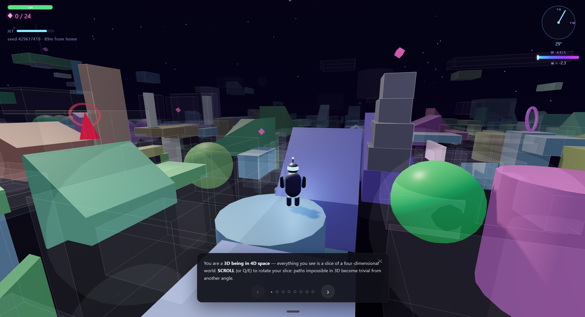

Lofall
A four-dimensional browser platformer. Navigate 3D cross-sections of 4D space, rotate the w-axis to reveal hidden paths, and explore an infinite seeded universe.

Lofall is a four-dimensional platformer that runs in your browser. You navigate three-dimensional cross-sections of four-dimensional space: rotating the w-axis reshapes the world, revealing hidden platforms and hiding others.
The procedurally generated universe includes named biomes, four-dimensional geometry, and a von Neumann drone swarm to sever at its root. No installation is required.